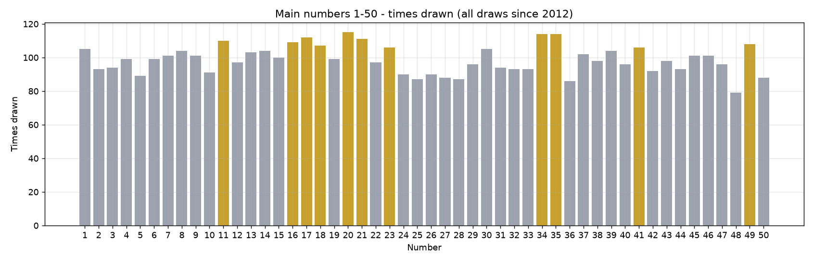
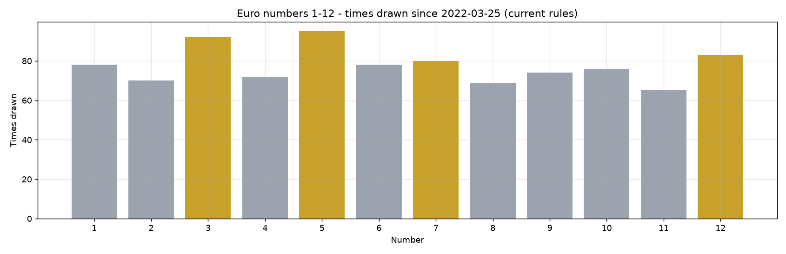
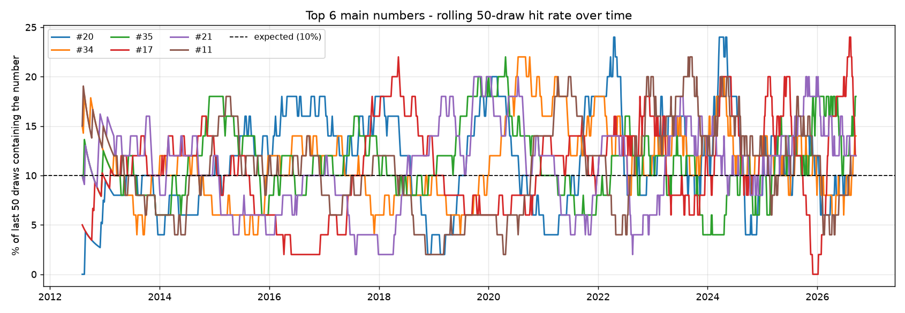
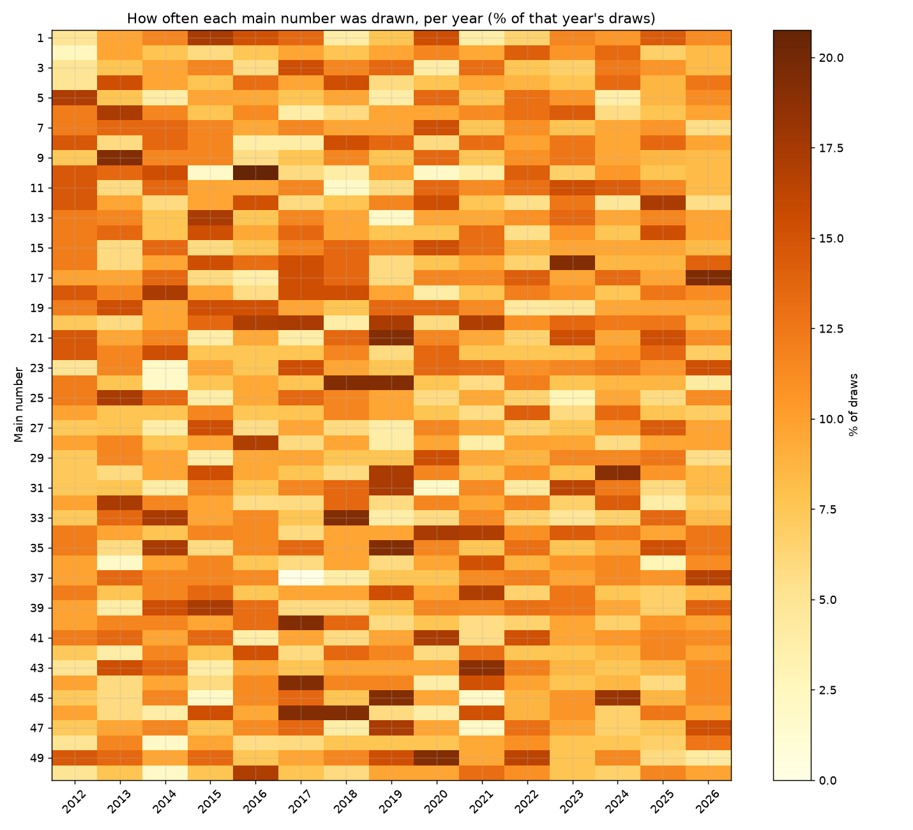
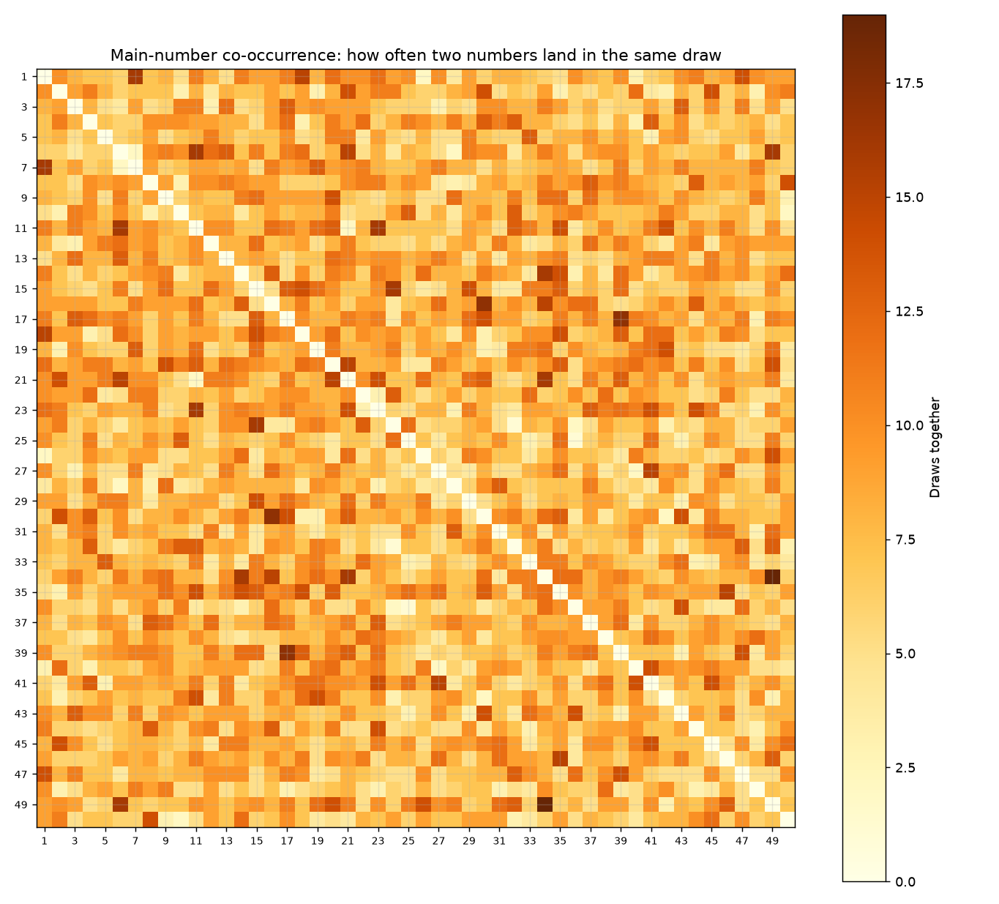
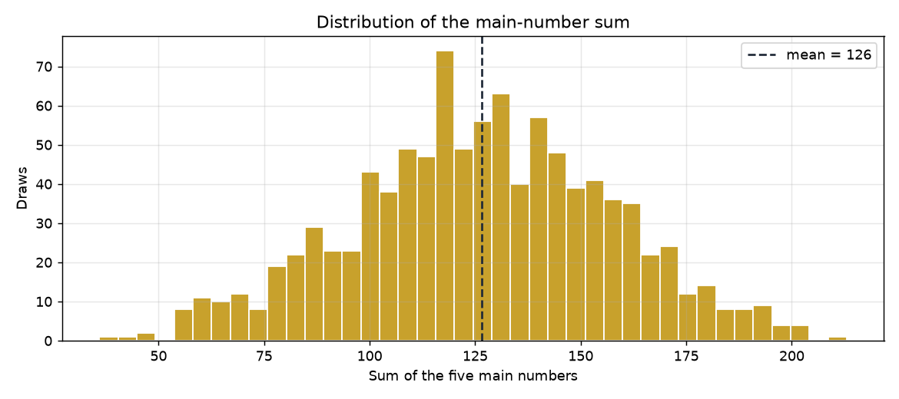
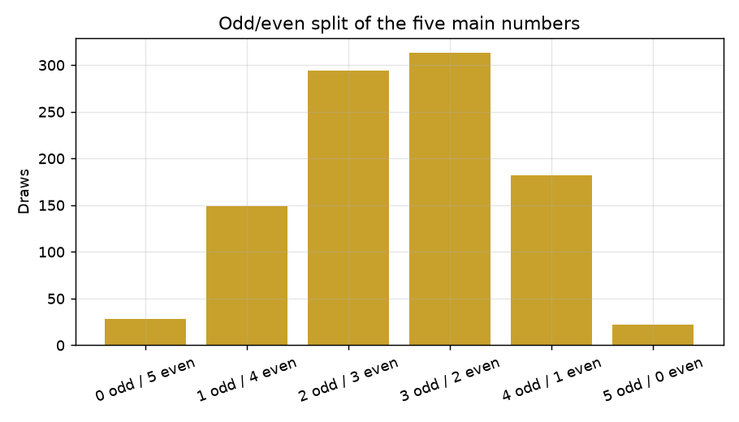
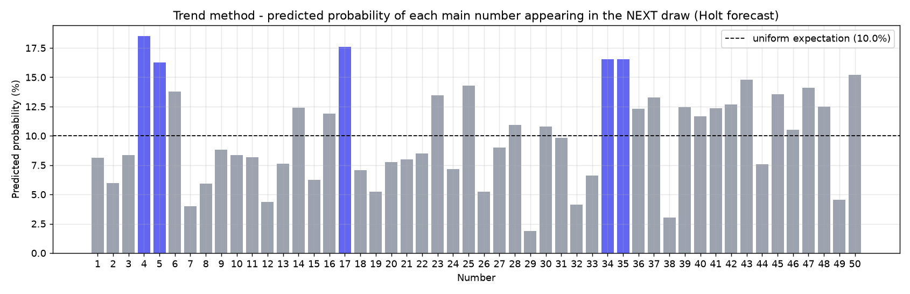
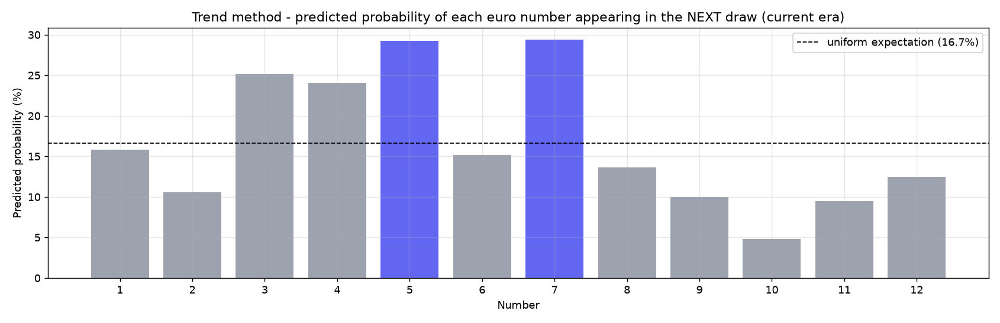
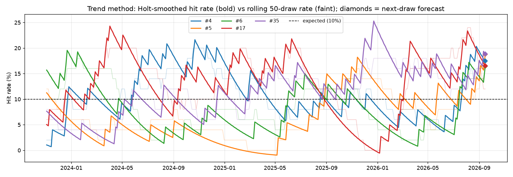

5 - 6 - 17 - 34 - 36 + Euro numbers 3 & 11

| number | count | percent_of_draws |
|---|---|---|
| 20 | 114 | 11.73 |
| 34 | 111 | 11.42 |
| 35 | 110 | 11.32 |
| 21 | 109 | 11.21 |
| 17 | 109 | 11.21 |
| 11 | 108 | 11.11 |
| 16 | 108 | 11.11 |
| 18 | 107 | 11.01 |
| 49 | 106 | 10.91 |
| 1 | 104 | 10.70 |
| 41 | 104 | 10.70 |
| 23 | 104 | 10.70 |
| 39 | 103 | 10.60 |
| 8 | 102 | 10.49 |
| 13 | 102 | 10.49 |
| number | count | percent_of_draws |
|---|---|---|
| 48 | 77 | 7.92 |
| 50 | 85 | 8.74 |
| 36 | 85 | 8.74 |
| 25 | 85 | 8.74 |
| 28 | 86 | 8.85 |
| 5 | 86 | 8.85 |
| 27 | 87 | 8.95 |
| 26 | 89 | 9.16 |
| 10 | 89 | 9.16 |
| 24 | 89 | 9.16 |

Frequencies are shown for the current rules era (since 25 March 2022, pool 1–12). All-time counts are in the spreadsheet, but note that numbers 11–12 only entered the pool in 2022 and 9–10 in 2014, so all-time euro comparisons are not apples-to-apples.
| number | count | percent_of_draws |
|---|---|---|
| 5 | 91 | 20.22 |
| 3 | 88 | 19.56 |
| 12 | 82 | 18.22 |
| 6 | 76 | 16.89 |
| 10 | 75 | 16.67 |
| 7 | 75 | 16.67 |
| 1 | 75 | 16.67 |
| 9 | 72 | 16.00 |
| 2 | 69 | 15.33 |
| 8 | 67 | 14.89 |
| 4 | 65 | 14.44 |
| 11 | 65 | 14.44 |



| pair | count |
|---|---|
| 34 & 49 | 18 |
| 17 & 39 | 17 |
| 16 & 30 | 16 |
| 6 & 11 | 16 |
| 6 & 49 | 16 |
| 1 & 7 | 16 |
| 11 & 23 | 16 |
| 21 & 34 | 16 |
| 15 & 24 | 15 |
| 16 & 34 | 15 |
| 20 & 21 | 15 |
| 14 & 34 | 15 |
| 1 & 18 | 15 |
| 27 & 41 | 15 |
| 39 & 47 | 14 |
| 15 & 18 | 14 |
| 9 & 20 | 14 |
| 20 & 49 | 14 |
| 26 & 49 | 14 |
| 2 & 21 | 14 |
| triplet | count |
|---|---|
| 14 & 16 & 34 | 6 |
| 1 & 7 & 21 | 5 |
| 38 & 42 & 48 | 5 |
| 8 & 34 & 36 | 4 |
| 16 & 41 & 45 | 4 |
| 15 & 18 & 24 | 4 |
| 20 & 21 & 49 | 4 |
| 6 & 11 & 49 | 4 |
| 7 & 18 & 19 | 4 |
| 13 & 28 & 45 | 4 |


| number | count | percent_of_draws |
|---|---|---|
| 37 | 11 | 21.15 |
| 17 | 10 | 19.23 |
| 39 | 9 | 17.31 |
| 23 | 8 | 15.38 |
| 18 | 8 | 15.38 |
| 44 | 8 | 15.38 |
| 47 | 8 | 15.38 |
| 16 | 8 | 15.38 |
| 36 | 7 | 13.46 |
| 48 | 7 | 13.46 |
| number | count | percent_of_draws |
|---|---|---|
| 49 | 2 | 3.85 |
| 30 | 2 | 3.85 |
| 24 | 2 | 3.85 |
| 29 | 3 | 5.77 |
| 33 | 3 | 5.77 |
| 22 | 3 | 5.77 |
| 10 | 3 | 5.77 |
| 12 | 3 | 5.77 |
| 7 | 3 | 5.77 |
| 26 | 4 | 7.69 |
| number | draws_since_seen | avg_gap | overdue_ratio |
|---|---|---|---|
| 8 | 37 | 9.2 | 4.00 |
| 30 | 20 | 9.4 | 2.13 |
| 31 | 19 | 10.3 | 1.85 |
| 7 | 18 | 9.6 | 1.87 |
| 15 | 18 | 9.7 | 1.86 |
| 32 | 17 | 10.3 | 1.64 |
| 10 | 16 | 10.8 | 1.48 |
| 33 | 14 | 10.4 | 1.35 |
| 11 | 14 | 8.9 | 1.57 |
| 3 | 13 | 10.3 | 1.26 |
Statistically "typical" ticket profile: five numbers summing to roughly 106–148, with a 3/2 or 2/3 odd–even split (that pattern covers ~62% of all historical draws).
Frequency-leaning pick: [11, 16, 17, 20, 34] + euro [3, 5]
Overdue-leaning pick: [8, 10, 15, 30, 32] + euro [4, 11]
Balanced pick (frequent + overdue + typical sum/odd-even profile): [8, 17, 31, 32, 34] + euro [np.int64(5), np.int64(11)]
All three are recomputed from the complete history after every draw.
1 · Equalizer — the ticket that would push the all-time number
distribution closest to perfectly even (minimises the variance of the 50 counts;
ties broken by longest absence):
25 - 28 - 36 - 48 - 50 + euro 4 & 11
2 · Maintainer — the ticket that would keep the current all-time
distribution shape most unchanged (minimises the shift of the normalised
frequency vector; ties broken by most recent appearance):
17 - 20 - 21 - 34 - 35 + euro 3 & 5
3 · Trend continuation — Holt double-exponential smoothing
(level + slope, half-life 20 draws) of every number's hit rate,
extrapolated one draw ahead; the five highest forecast probabilities win:
16 - 17 - 37 - 39 - 42 + euro 5 & 7



| method | pool | predictions | total_hits | avg_hits | chance_expectation |
|---|---|---|---|---|---|
| equalize | euro | 1 | 1 | 1.0 | 0.333 |
| maintain | euro | 1 | 1 | 1.0 | 0.333 |
| trend | euro | 1 | 0 | 0.0 | 0.333 |
| equalize | main | 1 | 2 | 2.0 | 0.500 |
| maintain | main | 1 | 1 | 1.0 | 0.500 |
| trend | main | 1 | 0 | 0.0 | 0.500 |